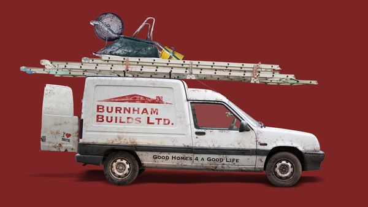
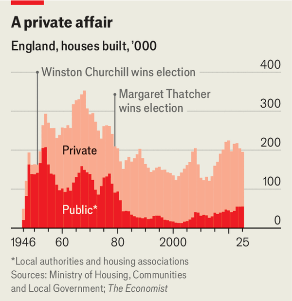
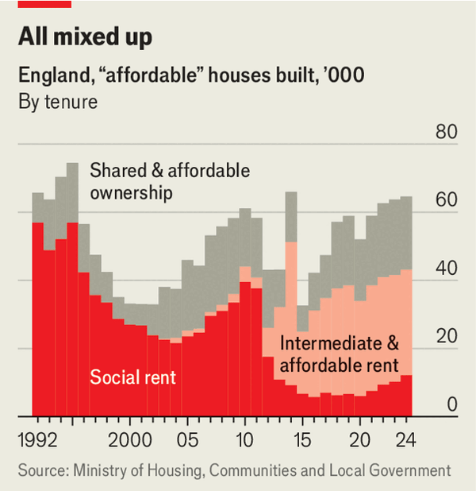

Jul 09, 2026 05:23 AM

The “People’s House” in Desford, Leicestershire, was a humble home. With three small bedrooms and hot water heated by a coal fire, in 1952 it was the Conservative government’s model solution to Britain’s post-war housing crisis. Taking just 12 weeks and £952 to build (£24,500, or $33,000, in today’s prices), the house was rented from the council for 16 shillings a week, a 30% market discount and equivalent to about 10% of average manual wages.
Andy Burnham, the prime-minister-in-waiting, is nostalgic about these post-war council homes, which he thinks used to be “the foundation for everything”. In a speech on June 29th he asked: “If you don’t give people a good home, what chance have they got of having a good life?” One of his few bold policy promises was to “oversee the biggest council-housebuilding programme since the post-war period”.
But council housing is not the only way to give people a good home. Sir Keir Starmer, the outgoing prime minister, focused on enabling private housebuilding, through planning reform, rather than the state picking up the shovel. The most sensible thing for Mr Burnham to do would be to ease planning restrictions further and to relax regulations, such as environmental requirements. Instead, he has said that “undue weight” has been placed on planning reform—he wants to return housing to its post-war heyday of state-led intervention.

In 1952, the year the People’s House was built, local authorities funded the construction of four in five of the 200,000 new homes built in England that year. A little under half of housebuilding was public for most of the pre-Thatcher decades. Last year, by contrast, only 12,500 of the 190,000 new homes, or one in 16, were built for what is now called “social rent” (the tenure Mr Burnham seems to have in mind when he talks of council houses), priced at 50% of the market rate on average. Mr Burnham’s announcement implies that he wants to build 75,000 social-rent homes a year, as that was the record level achieved after Margaret Thatcher won power in 1979, often seen as the end of the post-war period. As well as being costly it would take years to reach that level.
The promise to build a lot more housing for more people would seem to be a no-brainer. Politicians of all persuasions agree that Britain does not build enough. Between 1955 and 1979 new homes added around 1.9% to the housing stock each year, according to the Centre for Cities, a think-tank. Between 1980 and 2015 that rate fell to 0.8%, the lowest in all but one of 11 other European countries studied.
Sir Keir’s solution was simple: build more homes. His government set a target that 300,000 homes a year would be built in England—housing policy is devolved to the nations—over its five-year term. He introduced welcome reforms, including a tweak to mandatory housing targets and a change in the rules to give a presumption in favour of development around well-connected railway stations. But some of these reforms won’t be implemented until later this year at the earliest and they are in any case not sufficient. By our calculations, the number of homes added to the stock fell from 222,000 in the year to June 2024, when Sir Keir came to power, to 208,000 in the year to March 2026.
The biggest reason is that, while the government freed one hand from planning restrictions, it tied down the other. A slew of fresh taxes and regulations—from a building-safety levy to new climate standards—have added to the cost and complexity of construction. Add to that an increase in the price of labour and materials, and the Home Builders Federation, a lobby group, estimates that construction costs for a typical home have risen by £76,000 over the past five years (equivalent to 20% of the average sale price), causing a “viability crunch”. A new rule requiring second staircases in buildings over seven storeys is halting the construction of new-build flats, particularly in London. Construction began on just 7,500 private homes in the capital last year, against a target of 88,000.
If Mr Burnham is serious about building more homes, further planning reforms and regulatory changes would be the easiest and cheapest way to do so. He should also look at the inefficient allocation of existing council homes·. Attempting to build more council homes is a far inferior solution. The first problem is funding. The government has allocated £39bn over the next decade to build 300,000 affordable homes, including 18,000 social-rent homes, each year. The National Housing Federation, another industry lobby, reckons it costs £183,000 on average to build a social-rent home. If Mr Burnham earmarked all the current funds, perhaps 21,000 social-rent homes a year could be built. That suggests raising output to 75,000 homes a year would cost the government an extra £10bn annually (equivalent to more than a penny on every rate of income tax).

Finding such sums will be difficult given the pressures on spending. Another option would be to increase the share of homes that developers are required to set aside for affordable tenures in return for planning permission for private projects. Developers complain that these obligations—amounting to 15% of homes, on average—slow the building process and impair viability. Sir Sadiq Khan, London’s Labour mayor and a social-housing enthusiast, reluctantly reduced the obligations in the capital from 35% to 20% to unlock stalled schemes.
Mr Burnham has said that he can reduce the costs of his ambitious plans by making use of “vacant public land”. That seems fanciful. The 2015 Conservative government tried something similar, with a target of building 160,000 homes over five years on public land. In practice, the state had little understanding about the land it held and much of it required expensive remediation. Only a fraction of the target was reached before being quietly dropped.
And then there are concerns about whether local authorities can even deliver all these houses. They have not built at scale since the 1970s and no longer employ the armies of architects and structural engineers to do so. Outsourcing that expertise is likely to be expensive and hiring their own experts will take councils time, which Mr Burnham does not have.
The most defensible part of his ambitious council-housing push concerns the loss of the existing stock. In 1980 Thatcher gave tenants the “right to buy” their homes at a generous discount; and nearly 2m have since been sold on the cheap. The current government already intends to make the discounts less generous (capping them at 15%). Mr Burnham, who laments the sale of council housing, will probably push this policy through.
But when it comes to building new homes, he needs only to look north to see the fruits that a housebuilding programme led by the private sector can bring. Under his watch as mayor of Greater Manchester housing supply increased by 61% over nine years thanks to better local co-ordination, a pragmatic approach to high-rise building and not burdening the private sector with excessive affordable-housing obligations. Indeed Sir Richard Leese, the former leader of the city council, said in 2021 that if the council had tried to impose such requirements, ”It would have delivered no housing at all, zero.” If Mr Burnham wants to solve the housing crisis he should practise Manchesterism.■
For more expert analysis of the biggest stories in Britain, sign up to Blighty, our weekly subscriber-only newsletter.